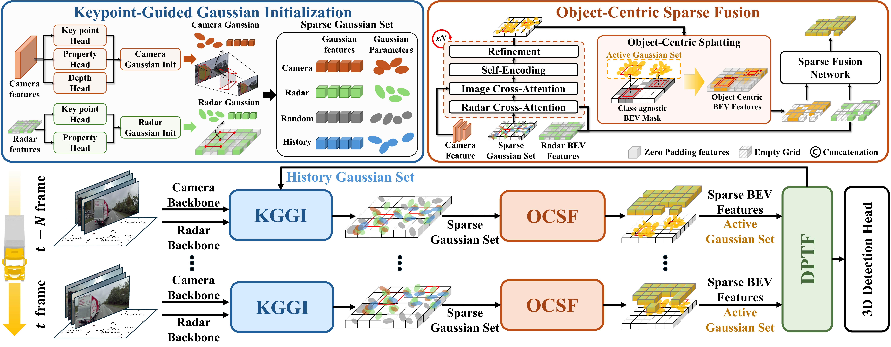
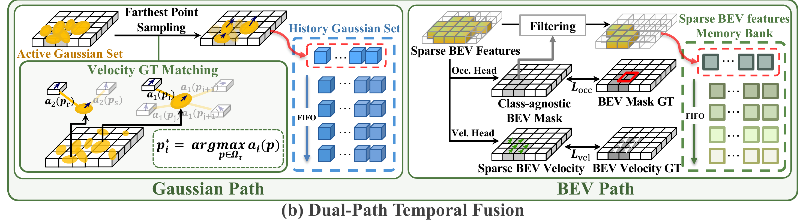

Method

Overall architecture of Horizon3D. Multi-view camera images and 4D radar points are encoded by their respective backbones. KGGI initializes sparse Gaussian primitives at estimated object keypoints. OCSF aggregates cross-modal features and produces a sparse BEV representation. DPTF fuses temporal information through Gaussian and BEV paths.
KGGI
Keypoint-Guided Gaussian Initialization estimates object keypoints from both radar and camera features and initializes a compact set of Gaussian primitives at these locations, enabling efficient object-centric encoding even at extended detection ranges up to 150m.
OCSF
Object-Centric Sparse Fusion aggregates cross-modal features around Gaussian primitives via deformable cross-attention, iteratively refines their parameters, and splats them onto the BEV plane to produce a sparse representation fused with radar BEV features.
DPTF
Dual-Path Temporal Fusion integrates temporal cues through two complementary paths: a BEV path that accumulates foreground features over multiple frames, and a Gaussian path that propagates primitives across frames with velocity-guided motion compensation.

Object-Centric Sparse Fusion (OCSF). Refined Gaussian primitives are splatted to form a class-agnostic BEV mask supervised against the BEV mask GT, while sampled active Gaussians aggregate cross-modal features around each object to produce object-centric BEV features.

Dual-Path Temporal Fusion (DPTF). The Gaussian path propagates a velocity-matched history Gaussian set through a FIFO memory, while the BEV path accumulates filtered sparse BEV features in a memory bank — jointly encoding per-object motion and multi-frame scene context.